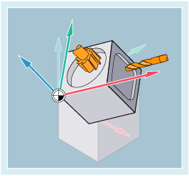

Weitere Informationen
Zeitpunkt der Aktivierung
Es empfiehlt sich, die Arbeitsebene G17 bis G19 bereits am Programmanfang festzulegen.
Grundeinstellung
In der Grundeinstellung ist für Drehen G18 (Z/X-Ebene) und für Fräsen G17 (X/Y-Ebene) voreingestellt:

Arbeitsebenen beim Drehen ① und Fräsen ②
Werkzeugradiuskorrektur
Mit Aufruf der Werkzeugradiuskorrektur G41/G42 muss die Arbeitsebene angegeben werden, damit die Steuerung Werkzeuglänge und -radius korrigieren kann.
Weitere Informationen: → Kapitel "Werkzeugradiuskorrekturen"
Kreisinterpolation
Die Steuerung benötigt die Angabe der Arbeitsebene zur Berechnung des Drehsinns.
Weitere Informationen: → Kapitel "Kreisinterpolation".
Bearbeitung in schräg liegenden Ebenen
Durch Drehung des Koordinatensystems mit ROT werden die Koordinatenachsen auf die schräg liegende Fläche gelegt. Die Arbeitsebenen drehen sich entsprechend mit:
Werkzeuglängenkorrektur in schräg liegenden Ebenen
Die Berechnung der Werkzeuglängenkorrektur bezieht sich immer auf die raumfeste, nicht gedrehte Arbeitsebene.
| Hinweis |
Mit den Funktionalitäten zur "Werkzeuglängenkorrektur für orientierbare Werkzeuge" können die Werkzeuglängenkomponenten passend zu den gedrehten Arbeitsebenen errechnet werden. |
Die Wahl der Korrekturebene erfolgt mit CUT2D/CUT2DF.
Weitere Informationen: → Kapitel "Werkzeugradiuskorrekturen"
Für die räumliche Festlegung der Arbeitsebene bietet die Steuerung sehr komfortable Möglichkeiten für Koordinatentransformationen.
Weitere Informationen: → Kapitel "Koordinatentransformationen (Frames)"